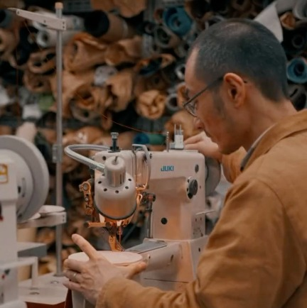
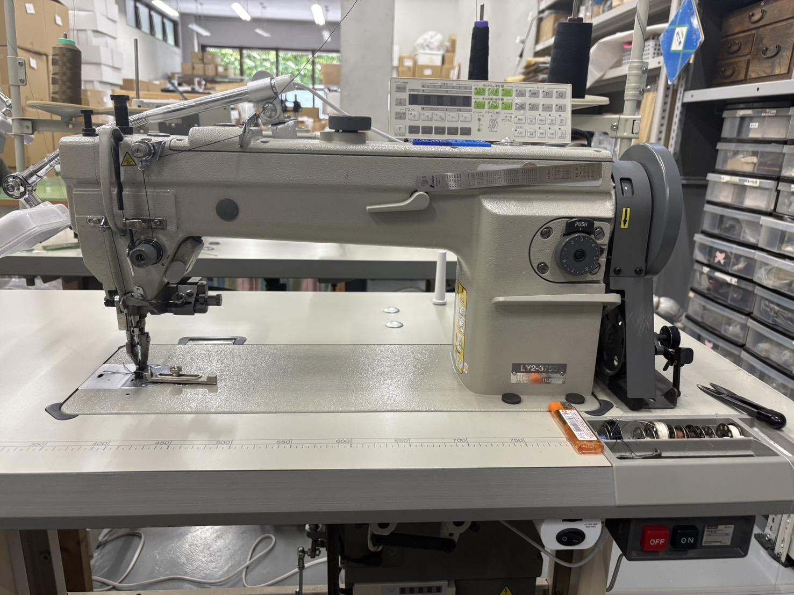
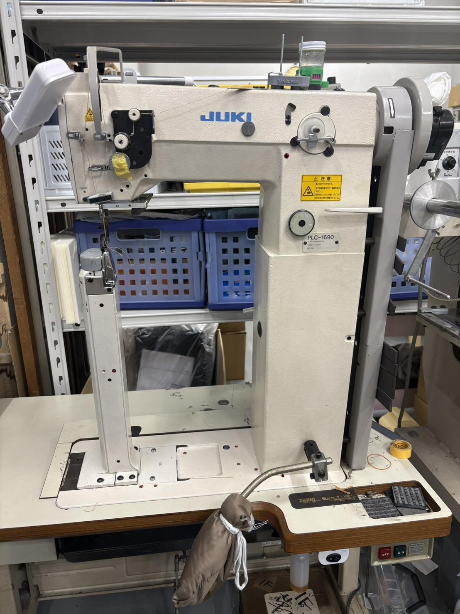
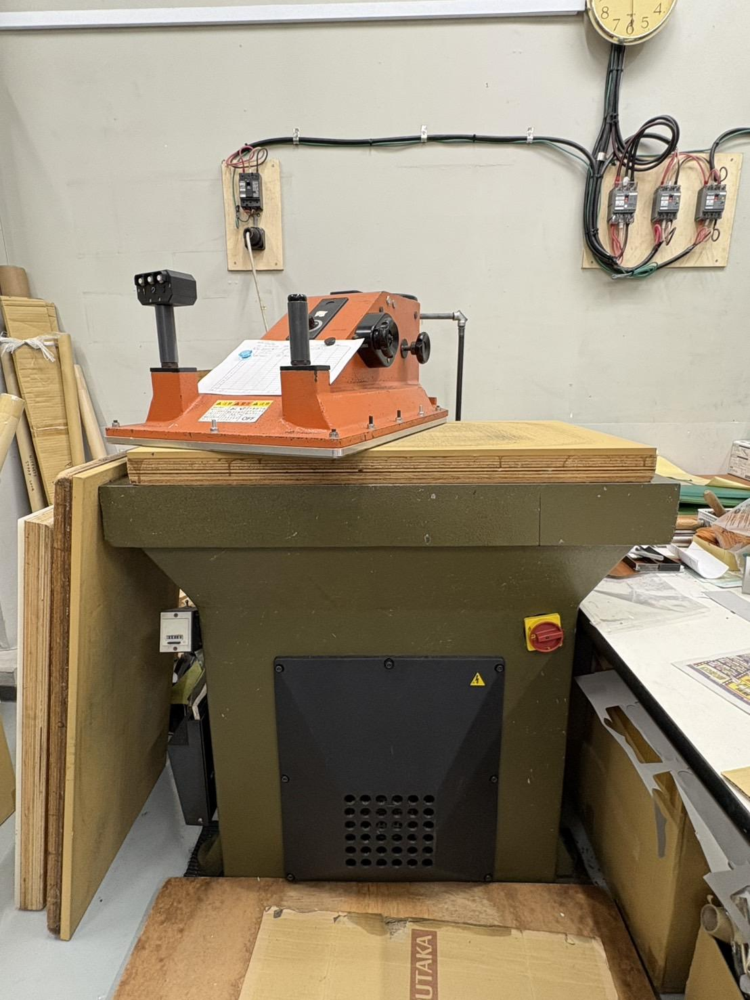
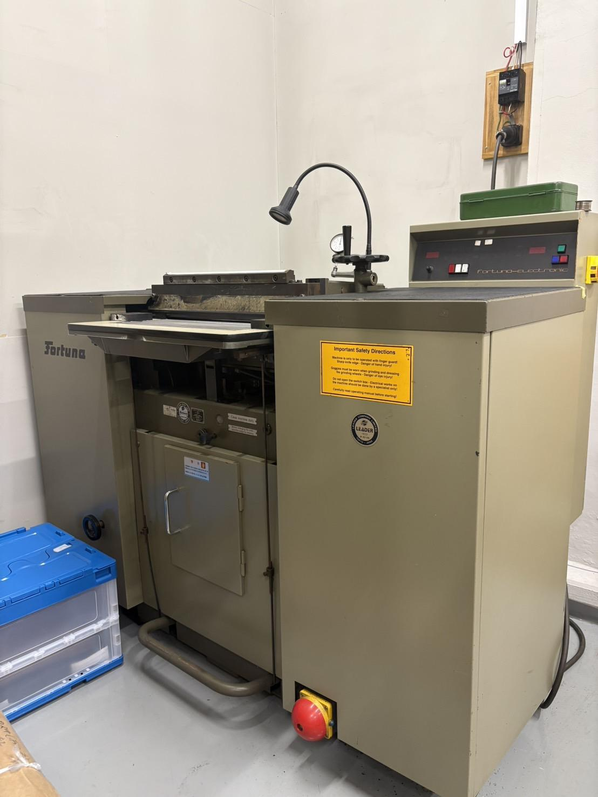
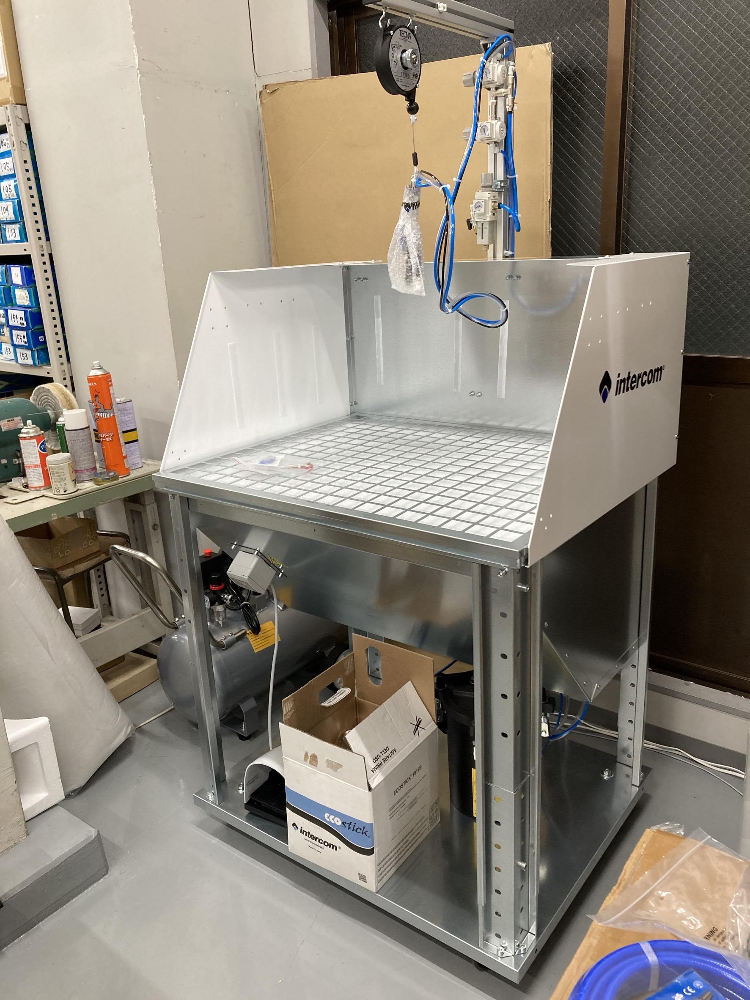
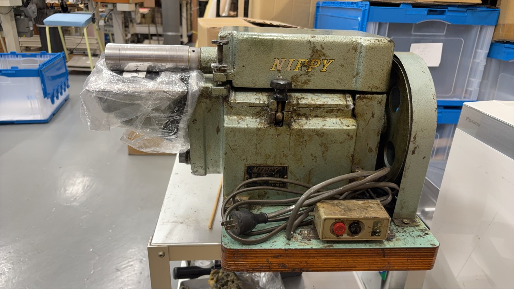
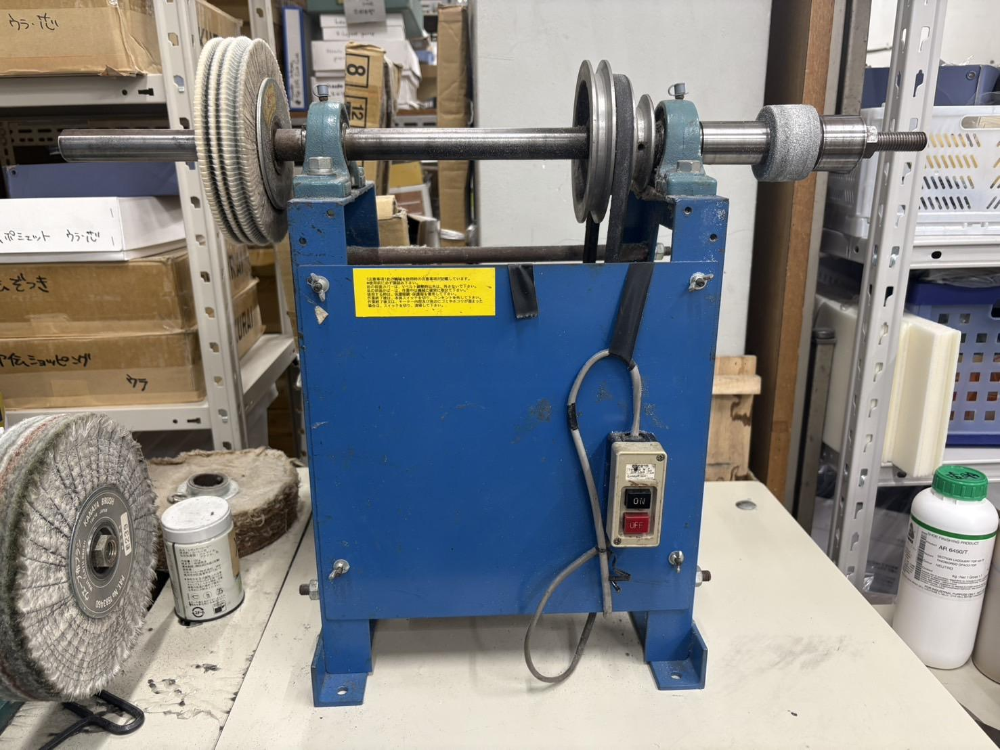

さまざまなブランドに対応
革鞄・革小物を中心に、国内外のブランド20社と長く取引を続けています。

1966年、東京の下町で、革製造の工房が始まりました。
以来60年、職人たちが手で守ってきた技術があります。
その技術と想いを、
私たちが次の時代へ引き継ぎます。
HISTORY
東京都墨田区で株式会社美嚢を設立
60年間、国内外の一流ブランドの革製品（鞄・財布等）を製造
B supplyが事業を承継し、60年続く職人の技術に、B supplyの営業力・マーケティング力・デジタル基盤を組み合わせ、成長を加速
60年間、一流ブランドに選ばれ続けてきました。全商品を国内で製造しています。

SIX REASONS
革鞄・革小物を中心に、国内外のブランド20社と長く取引を続けています。
牛革（カーフ・ヌメ・型押し）、羊革、山羊革、鹿革、馬革（コードバン）、豚革のほか、クロコダイル・パイソンなどのエキゾチックレザーにも対応しています。
全商品を日本国内で生産しており、海外での生産はありません。裁断から仕上げまで、すべての工程を国内の工房で一貫して行っています。
一点ずつ品質を確認し、仕上がりのばらつきを抑えています。
国内で経験を積んだ職人が製造を担当しています。長年培ってきた技術と感覚を活かし、細部まで丁寧に仕上げます。
専任の営業担当が継続して窓口を務め、同じ職人チームが製造を担当します。
EQUIPMENT
すべての製造工程を墨田区の工房で完結させています。裁断・縫製・仕上げの各工程を一人の職人が担えるため、複雑な仕様のご依頼にも対応します。

革や厚手の素材を縫う主力のミシンです。まっすぐな縫い目を安定して仕上げられます。

袋物や筒状の製品を、立体のまま縫い進められます。

上下と針の3か所で革を送るため、厚手の革もずれにくく縫えます。

柱状の台を使い、鞄の底や側面などの曲面を縫います。

鞄の大きなパーツを裁断する機械です。

厚い革を、必要な厚みに均一に薄くします。

革の縁を均一な厚みに薄く削ります。仕上がりを左右する大切な下準備です。

囲いの中で、接着剤をむらなく吹き付けます。

ローラーで、貼り合わせる前の革に糊をすばやく均一に塗ります。

ロゴの刻印や型押しに使います。温度を調整し、押し具合をそろえます。

革の縁や表面を磨き、仕上げます。